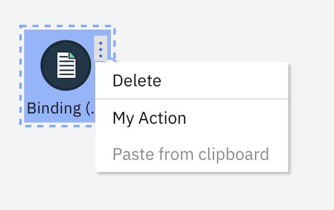
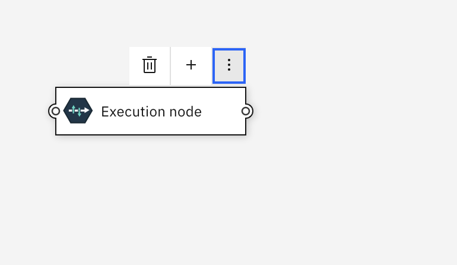
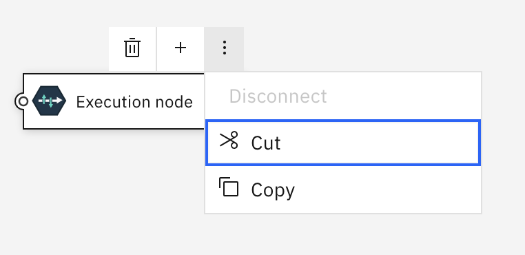

Context Menu Handler¶
This callback is optional. You don’t need to implement anything for it. If implemented, it must return an array of actions that describe what options are displayed in the Context Menu or Context Toolbar.
If this callback is not provided Common Canvas will handle context menu/toolbars, and their actions, internally. You only need to implement this callback if you want to add or remove options to/from the context menu/toolbar or provide your own menus in place of the default ones.
When is it called¶
For Context Menu¶
This callback will be called if the enableContextToolbar canvas config option is set to false (which is the default) and when the user performs a context menu gesture, such as mouse ‘right click’ or clicking an ellipsis icon, on a:
- Node
- Link
- Comment
- Port
- The canvas background or
- Combination of objects - if a number of objects are selected
- Note: With multiple selected objects, the convention is that a context menu/toolbar should display actions that are applicable to all the objects that are selected, rather than just the object for which the menu was requested.
For Context Toolbar¶
This callback will be called if the enableContextToolbar canvas config option is set to true and when the mouse cursor is hovered over any of the objects mentioend above.
contextMenuHandler¶
contextMenuHandler(source, defaultMenu)
‘source’ parameter¶
The source object passed in looks like this:
{
type: "node",
targetObject: {<object_info>},
selectedObjectIds: ["node_1", "node_2"],
mousePos: {x: "10", y:"20"}
}
targetObject - The object for which the context menu was requested. Not provided when type is “canvas”.
selectedObjectIds - An array containing the IDs of all currently selected nodes and/or comments and/or links.
mousePos - An object containing the coords of the mouse when the context menu was requested
‘defaultMenu’ parameter¶
This is an array describing the default menu that Common Canvas would usually display. If necessary, you can modify this array with your own elements or remove elements and then return the modified array. Alternatively, you can ignore this parameter and just return your own array.
Return array for Context Menus¶
The callback must return an array, that describes the context menu to be displayed. If the callback returns a null, then no menu/toolbar will be displayed.
There is one element in the array for each entry in the context menu. An entry can be either a context menu item, which consists of a label and an action, or a divider. An action can be disabled by setting the ‘enable’ field to false.
Here’s an example of a contextMenuHandler:
contextMenuHandler(source, defaultMenu) {
if (source.type === "node") {
return [
{ action: "deleteSelectedObjects", label: "Delete" },
{ divider: true},
{ action: "myApp_Action1", label: "My Action" },
{ action: "paste", label: "Paste from clipboard", enable: false }
];
}
return defaultMenu;
}
The above array will produce a context menu like this:

Customizing the default context menu¶
If you want to simply add your action to the default context menu provided by Common Canvas you can take the defaultMenu parameter provided to the callback, and add your menu item to it. Alternatively, you can provide a complete new context menu of your own.
Here is a sample implementation of contextMenuHandler, which takes a source object (described above) and the defaultMenu as parameters, and adds a custom action to the default menu when the user ‘right clicks’ the canvas background.
contextMenuHandler(source, defaultMenu) {
let customMenu = defaultMenu;
if (source.type === "canvas") {
customMenu = customMenu.concat({ action: "myApp_Action1", label: "My Action" });
}
return customMenu;
}
Return array for Context Toolbar¶
To display a context toolbar the same type of array is returned as described above for context menu. However, there are some extra fields for the action elements in the array. These are
isToolbarItem - This is a boolean. The default is false. If set to true the action will be added to the toolbar and if set to false the action will be displayed in the overflow menu.
icon - This is the icon to display for the action. If isToolbarItem is set to true you must provide an icon otherwise the action will show as an empty space in the toolbar. If an icon is specified and isToolbarItem is set to false, the icon will be displayed next to the action in the overflow menu. For many internal actions, Common Canvas will automatically display an appropriate Carbon icon. See the Internal Actions page for a list of actions that have associated icons.
Dividers can also be added to the context toolbar by specifying ‘toolbarItem: true’
import { Add } from "@carbon/react/icons";
...
contextMenuHandler(source, defaultMenu) {
if (source.type === "node") {
return [
{ action: "deleteSelectedObjects", label: "Delete", toolbarItem: true },
{ divider: true, toolbarItem: true },
{ action: "myAction1", label: "My Action1", toolbarItem: true, icon: (<Add />) },
{ action: "disconnectNode", label: "Disconnect", enable: false },
{ action: "cut", label: "Cut" },
{ action: "copy", label: "Copy" }
];
}
return defaultMenu;
}

And when the overflow icon is clicked, like this:

Warning¶
The contents of the context toolbar is dependent on which object the mouse cursor is currently hovering over (which may be different to any of the currently selected objects). You should make sure the actions you return in the array are applicable to the object the mouse cursor is hovering over or, if it is hovering over a selected object and other objects are also selected, to the set of selected objects.
To help decide whether the mouse cursor is hovering over a selected object or not, the application can call the canvas controller’s helper function: ‘isContextToolbarForNonSelectedObj(source)’. This will return true if the mouse cursor is over a non-selected object.
Actions¶
When the user clicks an action in the menu the action is executed either internally or externally.
Internal acitons¶
Internal actions are implemented inside Common Canvas, like “deleteSelectedObjects” in the example above. Common Canvas supports a large number of internal actions.
External actions¶
External actions are custom actions you want Common Canvas to display for your application like “myApp_Action1”, in the example above. Tip: To avoid any future name clashes with internal actions that might be added it is recommended you should make sure you action names are unique. For example, by adding a prefix to your application specfic actions.
Handling actions¶
When the user clicks an option in the context menu (or context toolbar) it causes the Before Edit Action Handler and then the Edit Action Handler callbacks to be called.